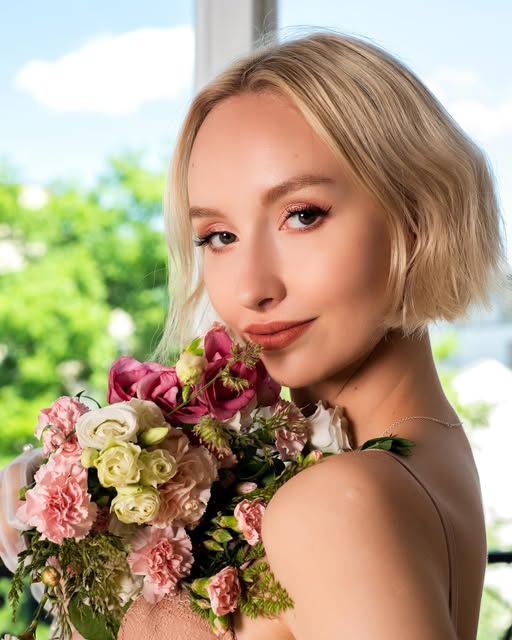
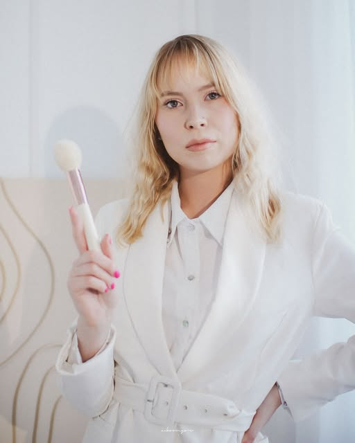
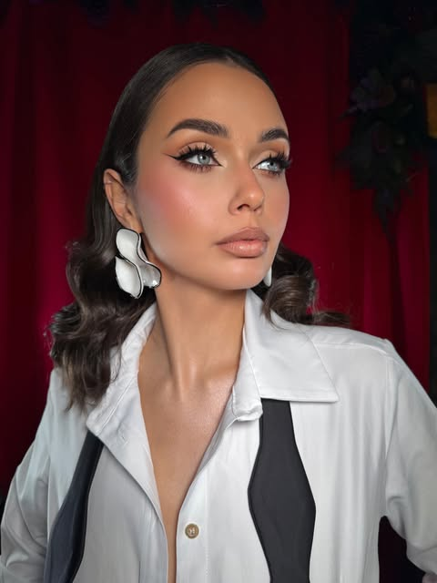
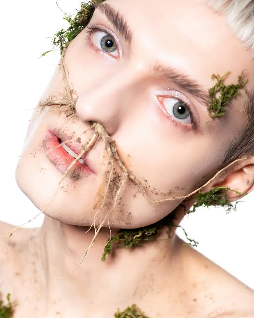
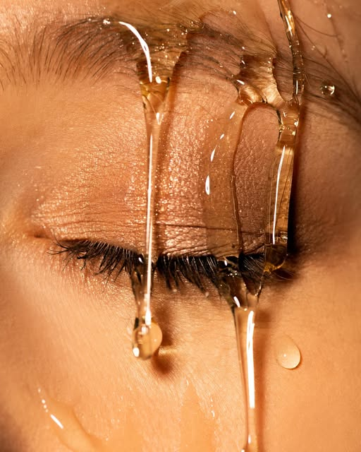
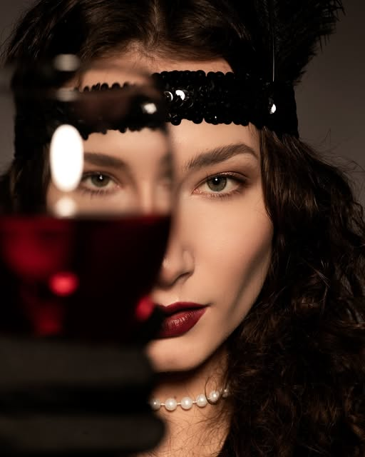
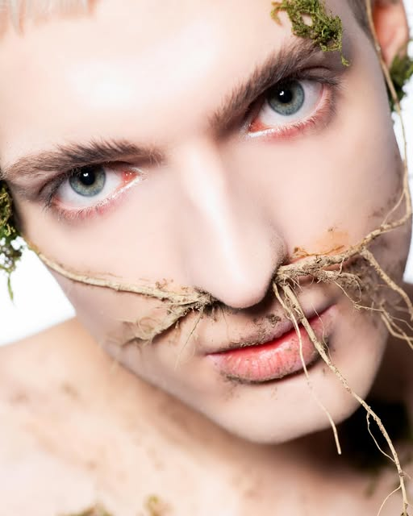
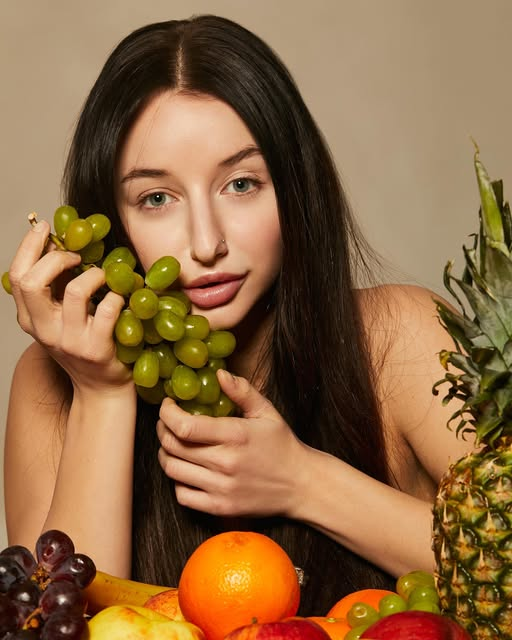
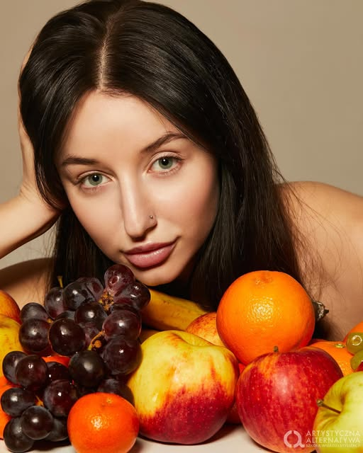

Makijaż ślubny
Świetlisty, trwały i odporny na emocje. W pakiecie makijaż próbny, dobór wykończenia pod sesję plenerową i wieczorne światło.
- makijaż próbny
- dojazd
- trwałość 12h+
Makijaż ślubny · Sesje · Kraków
Makijaże na każdą okazję — ślubne, wieczorowe i do sesji zdjęciowych. Naturalnie, trwale i zawsze pod Twoje rysy.

O mnie
Makijażystka z Krakowa. Robię makijaże na każdą okazję — od delikatnych, „skórnych” looków ślubnych, po mocne, redakcyjne kreacje do sesji zdjęciowych.
Najbardziej lubię ten moment, kiedy klientka patrzy w lustro i widzi siebie — tylko w najlepszej wersji. Dlatego zawsze zaczynam od rozmowy: o okazji, o stylizacji, o tym, co lubisz, a czego nie chcesz na twarzy. Dobieram produkty pod typ cery i warunki, w jakich makijaż ma wytrzymać — bo w dniu ślubu nie ma miejsca na poprawki.
Usługi
Wybierz to, czego potrzebujesz — resztę ustalimy w wiadomości.

Świetlisty, trwały i odporny na emocje. W pakiecie makijaż próbny, dobór wykończenia pod sesję plenerową i wieczorne światło.

Wesele, studniówka, sylwester, urodziny. Od eleganckiego „soft glam” po mocne oko i wyrazistą kreskę.

Beauty, moda, kreatywne koncepty. Współpracuję z fotografami i modelkami — makijaż robiony pod obiektyw i światło.

Indywidualna lekcja makijażu: dobór kosmetyków pod Twoją cerę i nauka looku, który zrobisz sama w 15 minut.
Portfolio
Prace z mojego Instagrama — kliknij, żeby powiększyć.

＋
＋
＋
＋Więcej prac i relacje na żywo znajdziesz na Instagramie — @apecek.makeup
Cennik
Orientacyjne ceny — ostateczną wycenę ustalamy po rozmowie o Twojej okazji.
od 200 zł
od 450 zł
Wycena indywidualna
Ceny mają charakter orientacyjny i nie stanowią oferty handlowej.
Opinie
”Tu wstaw opinię klientki — np. z wyróżnionej relacji „Opinie klientek” na Instagramie.
Imię · rodzaj makijażu
”Tu wstaw drugą opinię. Najlepiej działają krótkie, konkretne cytaty — 2–3 zdania.
Imię · rodzaj makijażu
”Tu wstaw trzecią opinię — np. od panny młodej albo fotografa, z którym pracowałaś.
Imię · rodzaj makijażu
Zobacz relacje z opiniami na Instagramie.
FAQ
Terminy w sezonie (maj–wrzesień) rezerwują się nawet z rocznym wyprzedzeniem. Najlepiej napisz od razu po ustaleniu daty ślubu — sprawdzę dostępność i zaproponuję termin makijażu próbnego.
Przy ślubie — zdecydowanie tak. To spotkanie, na którym dobieramy wykończenie skóry, intensywność oka i kolor ust, i sprawdzamy, jak makijaż zachowuje się na Twojej cerze przez cały dzień. W dniu ślubu wiemy już dokładnie, co robimy.
Tak. Na terenie Krakowa dojazd jest wliczony w pakiet ślubny. Poza Krakowem doliczam koszt dojazdu — napisz, gdzie odbywa się przygotowanie, a podam konkretną kwotę.
Makijaż okolicznościowy to zwykle 60–75 minut. Makijaż ślubny planuję na ok. 90 minut, żeby był czas na spokojne przygotowanie skóry i zdjęcia z przygotowań.
Napisz o tym przed wizytą. Dobiorę kosmetyki hipoalergiczne i delikatniejsze wykończenie, a przy makijażu próbnym sprawdzimy reakcję skóry z wyprzedzeniem.
Tak — makijaże dla osób towarzyszących ustalamy razem z terminem ślubnym. Przy większej liczbie osób planujemy harmonogram godzinowy, żeby wszystko zdążyło się na spokojnie.
Kontakt
Napisz, na jaką okazję potrzebujesz makijażu i kiedy — odpowiem z dostępnymi terminami i wyceną. Najszybciej odpisuję w wiadomości prywatnej na Instagramie.